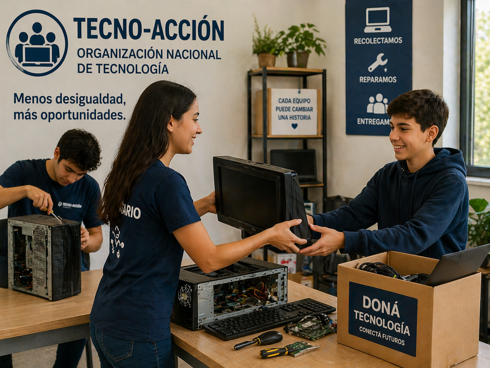

💻 Conectando Futuro

Este programa se encarga de la recolección, reparación y entrega de computadoras a personas que no tienen acceso a tecnología. Está dirigido principalmente a estudiantes y familias de bajos recursos.
Podés participar donando equipos en desuso o sumándote como voluntario para ayudar en la reparación y distribución.